1. What Vivi Lama is
Vivi Lama is the app with the routes and points of interest of the Lama Mocogno area, designed for people who want to walk or cycle around the territory.
You can install it for free from your phone's store:
- iPhone: Vivi Lama on the App Store
- Android: Vivi Lama on Google Play
Alternatively, open the App Store or Google Play on your phone and search for "Vivi Lama".
The app interface is available in English; route names, descriptions and points of interest are shown as they were published, often in Italian.
2. How the app is organised
At the bottom of the screen you always find three items: Home, Map and Profile. They are the main way to move around the app.
When you open a route or a point of interest, the content opens in a panel that slides up from the bottom over the map. If the panel does not expand when you scroll, drag the small grey bar at the top of the panel upwards.
3. Home: search and collections
When you open the app you land on the Home screen: at the top the large Vivi Lama logo with the app name; below it the Search bar and, further down, the available route collections. Among them you also find How to use the app, which opens this guide.
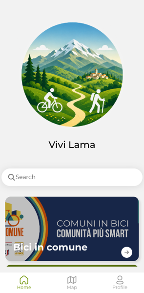
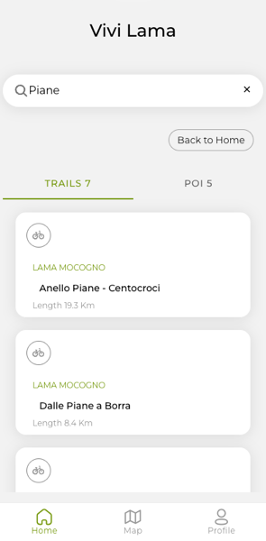
You can search for a route or a point of interest by name from the Search bar: the results are split into two tabs, TRAILS and POI, each showing the number of results found. Back to Home clears the search.
4. Route collections
On the Home screen, routes are grouped into themed collections (for example "Bike routes"). Tapping a collection takes you to the Map, with all the routes of the collection highlighted.
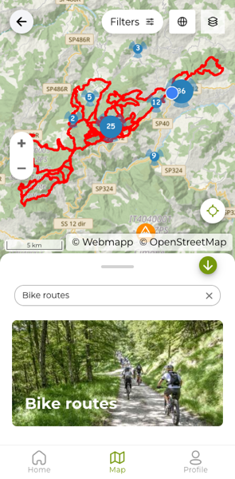
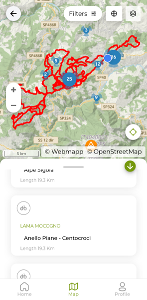
Drag the bar at the top of the panel upwards to see the list of trails in the collection, with the starting municipality, the route name and its length.
5. Route details
When you open a route you see it on the map and, in the panel at the bottom, the route name with the Travel mode.
Travel mode has two buttons: on foot (the walking figure) and by bike (the bicycle). Below it you find the route Length and the Expected time, which changes with the mode you choose: for the Anello Piane - Centocroci, for example, it is 7 h 34 m on foot and 2 h 30 m by bike. When the route opens, on foot is selected.
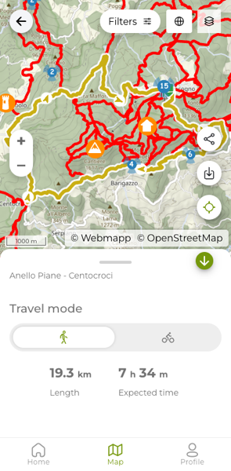
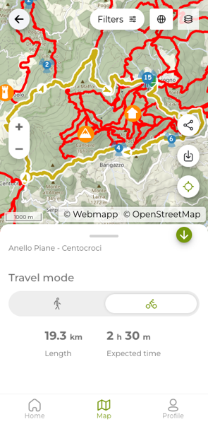
Scrolling the panel you find the elevation profile and the Technical Details: Distance, Duration, Slope (the elevation gain), Starting Elevation, Min Elevation and Max Elevation. The Duration in the Technical Details is always the walking time, even if you selected the bike.
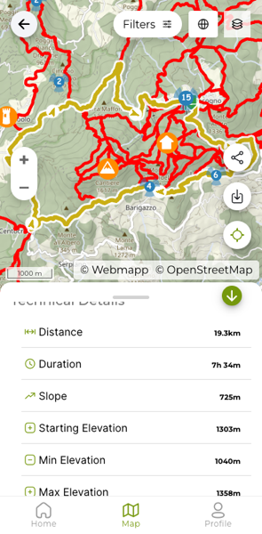
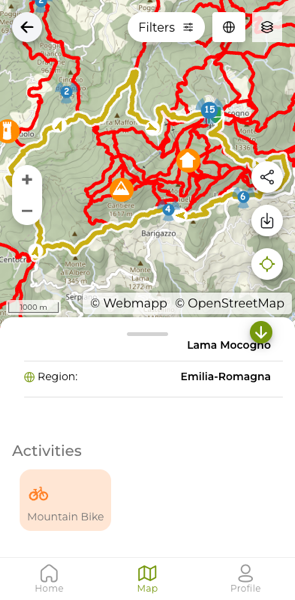
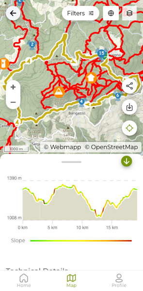
Scrolling the panel you also find which municipality and region the route belongs to, and which activity it suits (for example Mountain Bike).
Besides the technical data, some routes also have a short text description: if there is one it is shown in the details, otherwise it does not appear.
On the right edge of the map there are three useful buttons while you look at a route:
- Share (network icon): send the route link to others, for example via WhatsApp or email.
- Download (down arrow): start downloading the route to use it offline — see "Using the app offline".
- Location (crosshair): centre the map on your current position, useful to see where you are compared to the route.
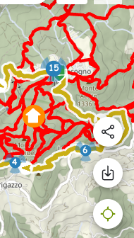
The first time you tap Location, the phone asks for permission to access your position: tap Allow to continue. Once you allow it, a blue dot shows where you are on the map and three buttons appear in the bottom right to manage the view: an arrow, a compass and an X, which closes it.
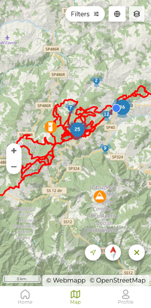
If you do not see the blue dot, check that you have allowed the app to use your location and that location is turned on in your phone settings — see also the Frequently asked questions.
6. Points of interest
Besides routes, the map also shows points of interest: fountains, viewpoints, historic buildings and other places across the territory, shown as coloured icons. When several points are close together, the app groups them into a numbered circle: tap it and the map zooms in and the points separate.
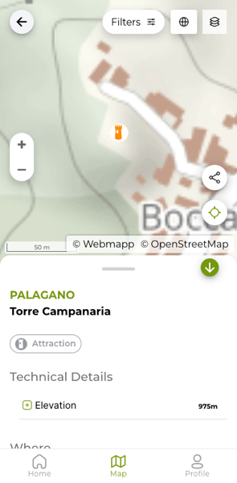
Tapping an icon opens the point of interest details, with its name, Technical Details (for example the Elevation) and the municipality where it is.
7. The map: filters and map type
Filtering points of interest
At the top of the map there is the Filters button. Tap it and then tap the "Points of interest" row to open the list of available categories, each with the number of points (for example Bar, B&B, ATM...).
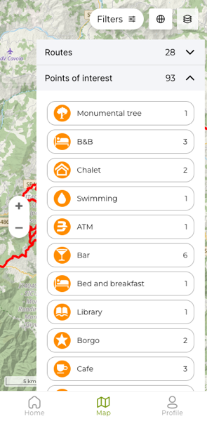
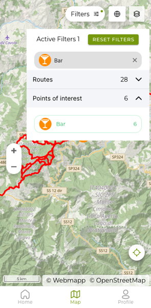
Tapping a category, the map shows only that type of point. At the top "Active Filters" appears with the number of filters applied: you can remove a single filter by tapping the X on its tag, or tap "RESET FILTERS" to remove them all.
Filtering routes
In the same Filters panel you also find the "Routes" row, with the number of routes on the map. Tapping it opens the route collections (for example "Via Vandelli" and "Percorsi Bike"), each with the number of routes it contains.
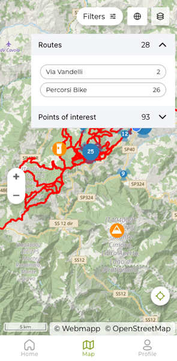
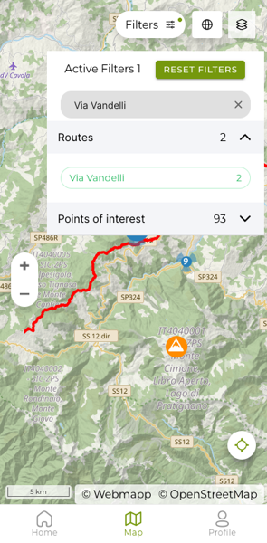
Tapping a collection leaves only its routes on the map. As with points of interest, the filter appears under "Active Filters" and you remove it with the X or with "RESET FILTERS".
Combining filters
Route filters and point of interest filters can be used together. For example, if you plan to walk the Via Vandelli and are looking for somewhere to sleep, open Filters, tap "Routes" and choose "Via Vandelli", then tap "Points of interest" and choose "B&B". "Active Filters 2" appears at the top, with the two filters side by side: the map shows only the Via Vandelli routes and only the B&Bs, without the other points of interest.
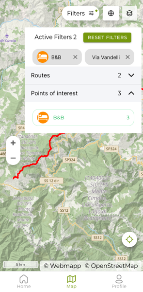
To remove only one of the two filters, tap the X on its tag; "RESET FILTERS" removes both.
Changing the map type
The layers button, at the top right next to "Filters", opens a panel with two sections (shown in Italian as "Tipo mappa" and "Dati"): the map type, to switch from the "Webmapp" map to the Satellite view, and the data, to show or hide the routes ("Percorsi").
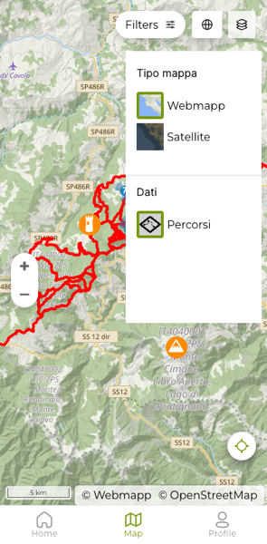
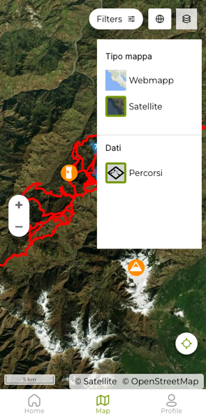
8. Using the app offline
If you are going to areas with no signal, you can download a route in advance and keep using it offline.
Open the route details and tap the download icon (the down arrow, among the icons on the right of the map). A screen shows the progress of the map download and of the media downloads.
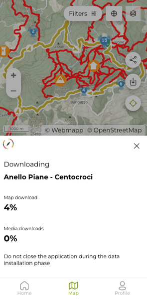
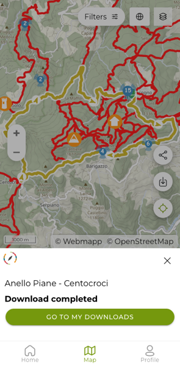
From Profile → Downloads → Downloaded tracks you find the list of downloaded routes, with their length, the space they take up and the Delete option to free up space when you no longer need them.
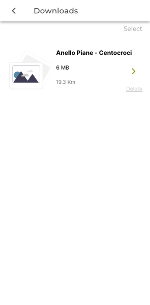
9. Profile and settings
From Profile at the bottom you find the "Your data" section, with Downloads and Downloaded tracks.
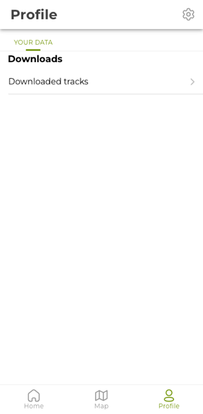
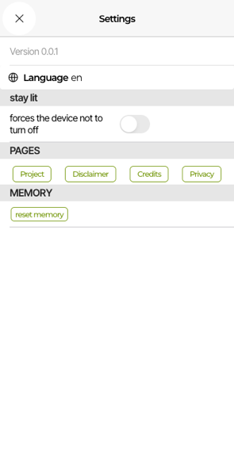
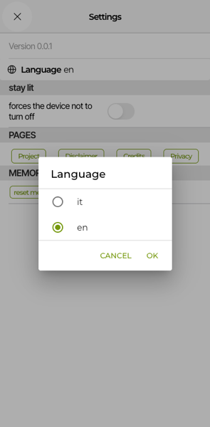
Tapping the gear icon at the top right of Profile opens the Settings, where you find the app version, the language, the "stay lit" option (to stop the screen from turning off by itself while you use the app), the links to Project, Disclaimer, Credits and Privacy, and the option to "reset memory".
Tapping Language opens a window where you choose between Italian (it) and English (en): select the language and tap OK. The same window also opens from the Map, with the globe button next to "Filters". The first time you open it, the app uses your phone's language if it is one of those available; otherwise it starts in Italian.
"stay lit" has a switch, "forces the device not to turn off": turn it on before you set off so the screen stays on while you follow the route, without having to unlock the phone all the time (keep in mind that it uses more battery).
The "reset memory" button, in the Memory section, deletes all the data stored locally by the app — including downloaded routes — freeing up the space they take: it is the same tool suggested in the Frequently asked questions to free up space when there are too many downloads. After using it you will have to download again the routes you want to keep using offline.
10. Frequently asked questions
- Do I need to sign up to use the app?
- No, you can search for routes and points of interest and download them for offline use without creating an account.
- Does the app guide me step by step like a satnav?
- No, Vivi Lama shows you the route on the map with all its data, but it does not give voice or turn-by-turn directions like a car navigator.
- How reliable are the travel times shown?
- They are estimates calculated on the route. The Expected time at the top of the details changes with the travel mode you choose (on foot or by bike), while the Duration in the Technical Details is the walking time. In any case, the real time depends on your pace, the ground conditions and the stops you make.
- I downloaded a route but cannot find it: where do I look?
- In Profile → Your data → Downloads → Downloaded tracks you find the full list of what you downloaded.
- My position on the map does not update: what should I check?
- Check that the app has permission to access your phone's location and that location (GPS) is turned on in your phone settings.
- Downloads take up too much space: how do I remove them?
- From Profile → Downloads → Downloaded tracks tap Delete on the route you no longer need; to free all the space used by the app you can also use "reset memory" in the Settings.